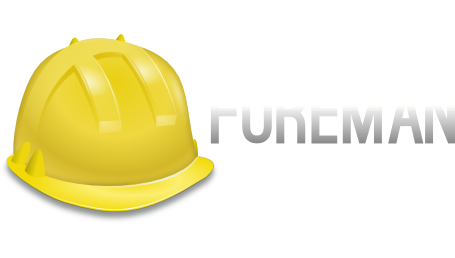

- An Eclipse-based IDE for Puppet Modules
- Takes care of a LOT of the learning and management of your codebase
- Written by the primary author of the future parser in Puppet - Henrik Lindberg
- The Puppet Labs solution to cross-system orchestration
- Excellent Security Model
- Uses AMQP middleware to broadcast commands as quickly as possible
- Simple to extend using Ruby
- Supports both Puppet, Chef, Facter, and Ohai for metadata collection
- A data collection service for Puppet
- Enables the inventory service and exported resources
- Contains the most recent facts and catalog for all nodes
- Can retain multiple run reports for all nodes

- A system lifecycle management tool
- Allows for provisioning and management of physical and virtual hosts
- Can act as an external node classifier (ENC) for Puppet
- Besides Puppet Enterprise, the most powerful management and reporting utility
- A new reporting interface for PuppetDB
- Still VERY young but shows promise
- The original Puppet Dashboard
- Now 100% community maintained
- A bare-metal/VM auto-provisioning tool
- New technology
- Attempts to generically solve the pre-automation phase